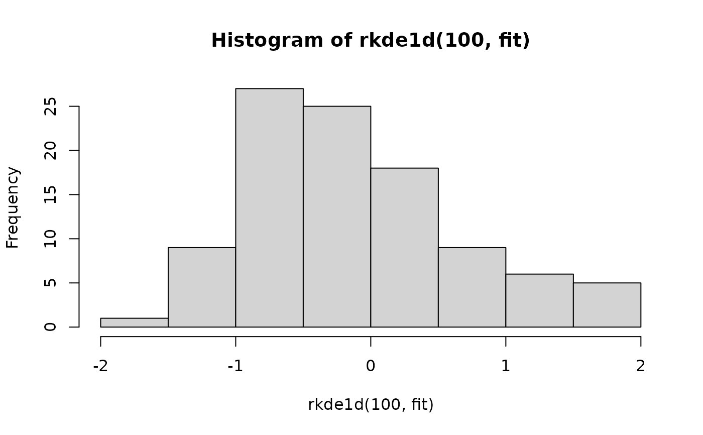

Density, distribution function, quantile function and random generation for a 'kde1d' kernel density estimate.
dkde1d(x, obj) pkde1d(q, obj) qkde1d(p, obj) rkde1d(n, obj, quasi = FALSE)
| x | vector of density evaluation points. |
|---|---|
| obj | a |
| q | vector of quantiles. |
| p | vector of probabilities. |
| n | integer; number of observations. |
| quasi | logical; the default ( |
The density, distribution function or quantile functions estimates
evaluated respectively at x, q, or p, or a sample of n random
deviates from the estimated kernel density.
dkde1d() gives the density, pkde1d() gives
the distribution function, qkde1d() gives the quantile function,
and rkde1d() generates random deviates.
The length of the result is determined by n for rkde1d(), and
is the length of the numerical argument for the other functions.
set.seed(0) # for reproducibility x <- rnorm(100) # simulate some data fit <- kde1d(x) # estimate density dkde1d(0, fit) # evaluate density estimate (close to dnorm(0))#> [1] 0.4490659pkde1d(0, fit) # evaluate corresponding cdf (close to pnorm(0))#> [1] 0.5009179qkde1d(0.5, fit) # quantile function (close to qnorm(0))#> [1] -0.002043773